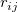
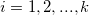
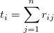
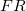
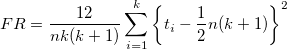

/math-b40669fa7371edf874815830e563b2ce.png "j\,\!") 内のブロックの中でランク付けされたスコアは
内のブロックの中でランク付けされたスコアは
と表記されます。平均の順位がスコアを結びつけるのに割り当てられます。
以下の説明は、NAGのアルゴリズムから引用したものです。
各列の値はランク付けされ、 観測の処理 内のブロックの中でランク付けされたスコアは

の場合、ランク合計は
になります。
は
で計算されます。有意水準は、/math-cfebfa945941b02f58dc453d7b14aeb5.png "x^2\,\!") 分布で比較され、この分布は
分布で比較され、この分布は /math-4dd90bab747a167e7975e1f8fb397a4d.png "k-1\,\!") の自由度を持ちます。ここでkは、標本の合計数です。
の自由度を持ちます。ここでkは、標本の合計数です。
このアルゴリズムの詳細は、nag_friedman_test (g08aec)をご覧下さい。